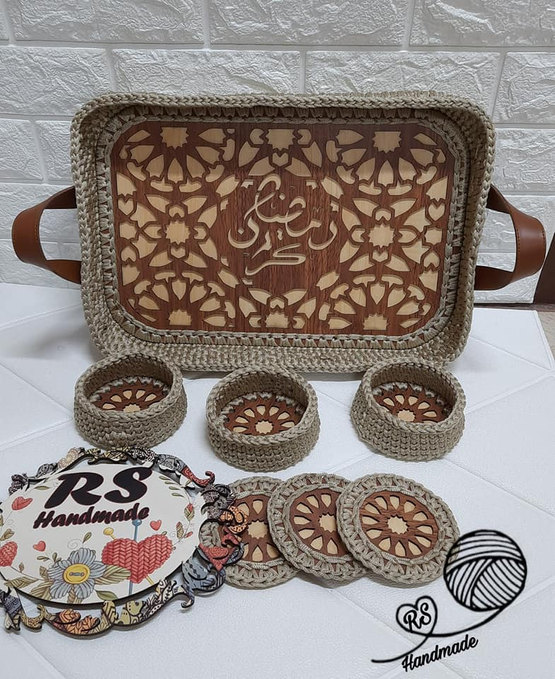
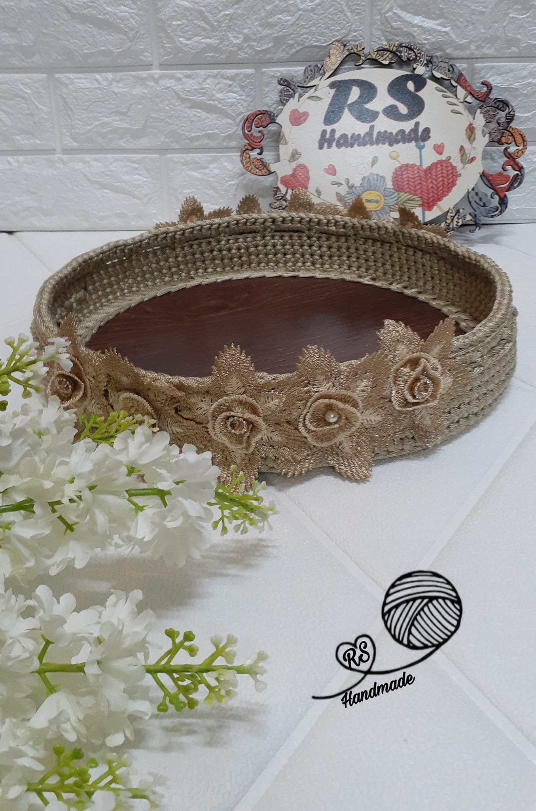
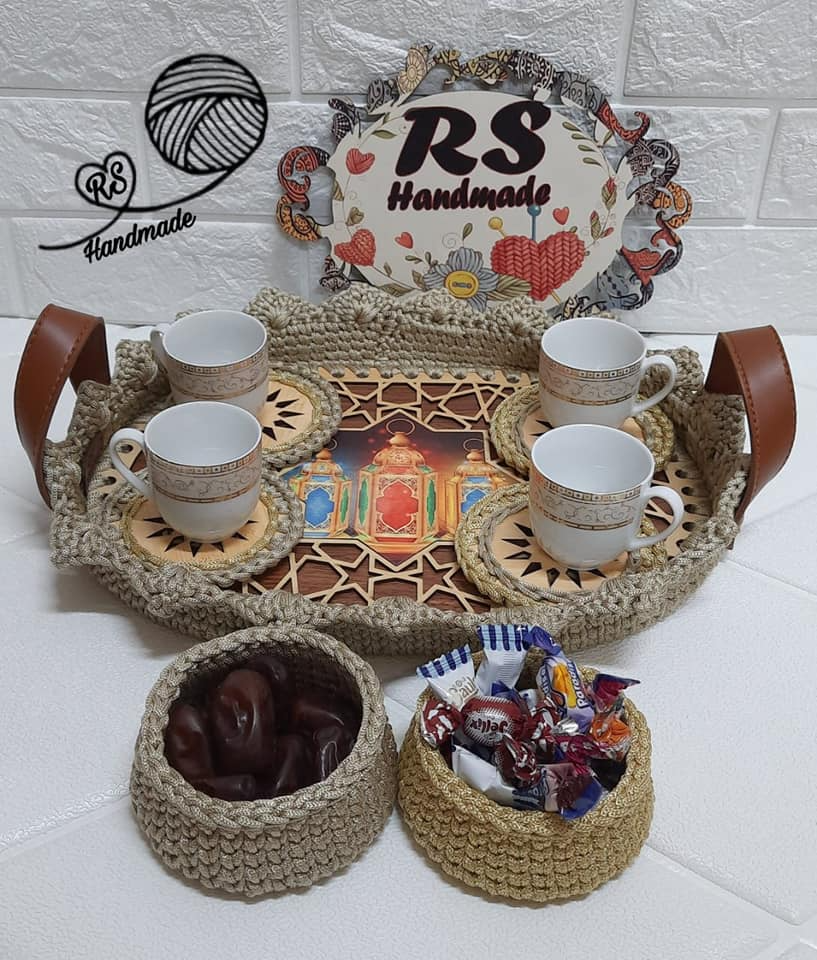

Handcrafted Serving Tray
Our handmade serving tray combines elegance with practicality, perfect for serving drinks and snacks in style. Each tray is meticulously crafted from premium materials, featuring beautiful wood grain patterns and sturdy handles. The careful attention to detail and superior craftsmanship make this tray both a functional serving piece and an attractive decorative element for your home.
Product Specifications
- Material: Premium hardwood
- Ergonomic handles for easy carrying
- Non-slip surface treatment
- Handcrafted with precision
- Water-resistant finish